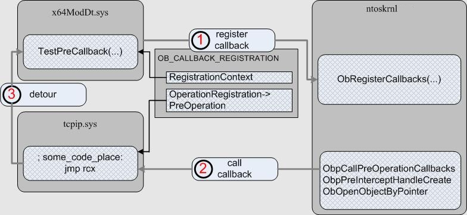

Платформа x64 (здесь и далее имеется ввиду AMD64) стала достаточно распространенной. Это принесло разработчикам уровня ядра (user mod'ным тоже, но в меньшей степени) множество сюрпризов. В частности, изменилось соглашение о вызове функций. Как видно из документации, первые четыре параметра передаются в регистрах. То есть теперь, набрав команду отладчика просмотра стека вызовов с аргументами (kb), определить параметры вызывающих функций становится нетривиальной задачей, требующей дизассемблирования тел этих функций.
Но передача параметров в регистрах дает очень широкий простор для построения и поиска detour-кода. Под detour-кодом здесь я подразумеваю некоторый кусок кода, который будет расположен в "чужом" (внешнем по отношению к нашему) модуле, который может быть использован для сокрытия обработчика или обхода некоторых проверок. Рассмотрим описание функции регистрации функции обратного вызова при операциях над описателями - ObRegisterCallbacks(...). В конце MSDN'овской статьи недвусмысленно сказано, что если указанный обработчик расположен в неподписанном модуле, то функция вернет STATUS_ACCESS_DENIED. Допустим, что загруженному неподписанному драйверу на x64 системе (методы загрузки в обход проверок подписи публично описаны и используются, например, в boot-kit'ах) нужно "фильтровать" создание описателей объектов. Классически, обход реализуется записью небольшого detour-кода в выравнивание одной из секций "чужого" подписанного модуля. Далее я опишу метод, который позволит не использовать запись.
Для начала немного по-дизассемблируем ядро и посмотрим как реализуется проверка. Проследив логику исполнения функции ObRegisterCallbacks(...), можно увидеть, что ошибка STATUS_ACCESS_DENIED будет возвращена, если неэкспортируемая функция nt!MmVerifyCallbackFunction(PVOID CallbackRoutine) вернет FALSE на ненулевой адрес nt!_OB_OPERATION_REGISTRATION.PreOperation или nt!_OB_OPERATION_REGISTRATION.PostOperation:
mov rcx,[rsi][rbp][010]
cmp rcx,rbx
jnz .00000001`404B5C5D
cmp [rsi][rbp][018],rbx
jz .00000001`404B5CE8
cmp rcx,rbx
jz .00000001`404B5C66
call MmVerifyCallbackFunction
cmp eax,ebx
jz .00000001`404B5CE1
mov rcx,[rsi][rbp][018]
cmp rcx,rbx
jz .00000001`404B5C79
call MmVerifyCallbackFunction
cmp eax,ebx
jz .00000001`404B5CE1
; ...
; 00000001`404B5CE1:
mov esi,0C0000022
jmps .00000001`404B5CF5
Код функции nt!MmVerifyCallbackFunction(...) достаточно простой. Ключевым для нас местом является вызов nt!MiLookupDataTableEntry(...) и анализ полученного указателя:
call MiLookupDataTableEntry
cmp rax,r12
jz .00000001`4046EF0C
test b,[rax][068],020
cmovnz edi,ebp
; ...
mov eax,edi
; ...
retn
Функция nt!MiLookupDataTableEntry(...) проходит неэкспортируемый список загруженных в ядро модулей nt!PsLoadedModuleList. Каждый элемент списка это недокументированная структура nt!_KLDR_DATA_TABLE_ENTRY в которой, помимо прочего, хранятся флаги. Как видно из листинга nt!MiLookupDataTableEntry(...), по смещению 0x68 (для AMD64) хранятся флаги модуля (что соответствует описанию из WRK), а маска 0x20 сигнализирует ядру, что модуль подписан.
Из вышеприведенного можно сделать вывод, что адрес кода, вызывающего ObRegisterCallbacks(...) не подвергают проверке на расположение в подписанном модуле. Так же нет проверки на то, что бы вызывающий код и регистрируемые функции обратного вызова находились в одном модуле. Смещение до флагов в недокументированной структуре nt!_KLDR_DATA_TABLE_ENTRY, как и само значение флага подписанности модуля, не менялось (проверено на линейке ядер VistaSP1 6001 – Win7 SP1 7001). В нашей задаче нам поможет то, что нет необходимости искать неэкспортируемую голову списка загруженных модулей nt!PsLoadedModuleList. На элемент этого списка (nt!_KLDR_DATA_TABLE_ENTRY *) указывает поле nt!_DRIVER_OBJECT.DriverSection. А функция перечисления директории дерева объектов nt!ZwQueryDirectoryObject(...) экспортируется из ядра. С ее помощью, перечислив директории "\Driver" и "\FileSystem", мы найдем большинство загруженных модулей ядра.
Теперь взглянем на прототип регистрируемого обработчика, например ObjectPreCallback(...). Как видно из прототипа, первым параметром функции передается некоторый контекст, который был указан драйвером при регистрации. Таким образом, учитывая что первый параметр на x64 системе передается в регистре rcx, для обхода проверки подписи можно найти некоторый код в подписанном модуле, который передавал управление по значению rcx. Так как размер команд регистровых операций достаточно мал, то вероятность нахождения "готового" detour-кода достаточно велика. Для реализации тестового драйвера, который я назвал x64ModDt, было выбрано 2-е последовательности инструкций, которые передают управление по значению регистра rcx:
- jmp rcx: FF E1
- push rcx/ret: 51 C3
Думаю, можно придумать еще несколько последовательностей. Общая суть работы показана на рисунке:

Драйвер x64ModDt.sys нашел подходящую инструкцию в модуле tcpip.sys. Первым действием x64ModDt.sys регистрирует код из tcpip.sys в качестве функции обратного вызова, указывая в качестве параметра указатель на свой обработчик TestPreCallback(...). Далее, вторым действием, ядро вызывает функцию обратного вызова из tcpip.sys, которая в свою очередь (третьим действием) передает управление функции TestPreCallback(...). Если загрузить демонстрационный драйвер, то можно увидеть, что такой подход работоспособен.
P.S.
Можно реализовать более универсальный подход к обходу проверки цифровой подписи, используя идею Cr4sh'а, описанную в статье "Обход детектирования скрытого исполняемого кода". Суть идеи - выделение и использование памяти на месте выгруженной области PE-образа, в частности discardable-секции PE файла. Такой подход должен работать для любой архитектуры процессора.
Скачать демонстрационный драйвер x64ModDt с исходным кодом.
ΞρεΤΙκ